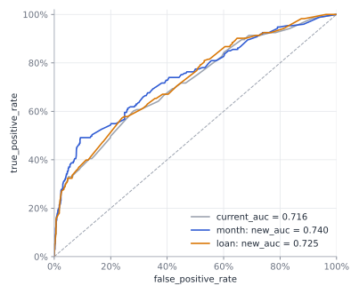

模型表现#
kivi.metrics 衡量评分区分事件与非事件的能力。 roc_auc() 、 gini() 和 ks() 用一个数概括排序效果， roc_table() 列出这些指标背后的 ROC 曲线上的点。 roc_auc_interval() 给出 AUC 的标准误和置信区间， delong_test() 检验同一批客户的两个评分排序效果是否一样好。 gains_table() 按评分段展开排序效果， brier_score() 将预测概率与实际结果对照。
模型刻度为 评分卡 之后衡量其表现，然后再在 校准 中检查其概率。
定义#
设有 \(n_1\) 个事件和 \(n_0\) 个非事件，\(R_1\) 为事件在全部评分中的秩之和，相同评分取平均秩。ROC 曲线下面积和 Gini 系数为
AUC 是随机抽取的一个事件比随机抽取的一个非事件评分更高的概率，评分相同时计为二分之一。与目标无关的评分，AUC 约为 0.5，Gini 约为 0。
设 \(F_1\) 和 \(F_0\) 分别为事件评分和非事件评分的经验分布函数。Kolmogorov-Smirnov 统计量是二者的最大差距：
差距取绝对值，与双样本检验相同。因此 KS 不反映评分的方向，其最大差距也可能来自排序方向相反的评分区间。应与 Gini 一起解读。
把评分不低于阈值 \(t\) 的客户全部标记出来，可以捕获比例为 \(\mathrm{TPR}(t)\) 的事件，即真正例率；同时也标记了比例为 \(\mathrm{FPR}(t)\) 的非事件，即假正例率。ROC 曲线从最高阈值到最低阈值依次连接各点 \((\mathrm{FPR}(t), \mathrm{TPR}(t))\) 。AUC 是曲线下的面积，KS 是两个比率之间的最大差距 \(\lvert \mathrm{TPR}(t) - \mathrm{FPR}(t) \rvert\) 。评分相同的观测使曲线沿对角方向移动，因此面积与 AUC 一样，把评分相同的一对计为二分之一。
计算示例#
下面六位客户中有三位是事件。在九对“事件—非事件”组合中，六对排序正确，两对错误，一对在 0.4 处并列，因此 AUC 为 \((6 + 0.5) / 9\)：
>>> from kivi.metrics import gini, ks, roc_auc
>>> score = [0.1, 0.4, 0.4, 0.8, 0.7, 0.9]
>>> target = [0, 0, 1, 0, 1, 1]
>>> round(roc_auc(score, target), 4)
0.7222
>>> round(gini(score, target), 4)
0.4444
以 0.4 为切分点，三分之二的非事件评分不高于它，而事件只有三分之一。没有哪个切分点能把两类分得更开，因此 KS 为三分之一：
>>> round(ks(score, target), 4)
0.3333
ROC 表在第一行（阈值为无穷大，不标记任何人）之后，为五个不同的评分各列一行。在 0.4 处，评分相同的事件和非事件被同时标记，因此曲线从 (1/3, 2/3) 沿对角方向移到 (2/3, 1)：
>>> from kivi.metrics import roc_table
>>> roc_table(score, target)[
... ["cum_non_event", "cum_event", "false_positive_rate", "true_positive_rate"]
... ].round(3)
cum_non_event cum_event false_positive_rate true_positive_rate
threshold
inf 0 0 0.000 0.000
0.9 0 1 0.000 0.333
0.8 1 1 0.333 0.333
0.7 1 2 0.333 0.667
0.4 2 3 0.667 1.000
0.1 3 3 1.000 1.000
曲线下各梯形的面积为：从 0.9 到 0.8 为 1/9，从 0.7 到 0.4 为 5/18，从 0.4 到 0.1 为 1/3，合计等于 AUC 13/18。两个比率之间的最大差距就是 KS，即 1/3。
评分方向#
所有函数都要求事件概率越高、评分越高，例如预测的违约概率（PD）。评分卡分数的方向相反，分数越高表示风险越低，因此须先取负再传入：roc_auc(-points, target)。
所有函数都是评分在前、目标在后，就像 woe_table(groups, target) 把分组放在前面。scikit-learn 的指标函数把目标放在前面，从那里移植代码时请检查参数顺序。
与 woe_table() 相同，目标为 1 表示事件，为 0 表示非事件。两个 Series 的索引必须相同；数组和列表按位置对应， 约定 说明了所有函数共同遵守的这一规则。评分必须是有限值，因此评估模型之前要先确定缺失值如何评分。
评估 WOE 评分#
银行数据提供了一个更贴近实际的例子。下面的评分把四个变量的 WOE 值相加，这些 WOE 在开发样本上拟合。WOE 越高表示事件率越高，因此这个和的方向已经符合指标的要求。评分卡会用逻辑回归为各变量加权；对任何评分，这些指标的处理方式都一样。
>>> import numpy as np
>>> import pandas as pd
>>> from kivi.datasets import Dataset
>>> from kivi.woe import woe_table, woe_transform
>>> data = Dataset.bank_data()
>>> development, validation = data.iloc[:3000], data.iloc[3000:]
>>> def to_groups(frame):
... return pd.DataFrame({
... "poutcome": frame["poutcome"],
... "contact": frame["contact"],
... "housing": frame["housing"],
... "age": pd.cut(frame["age"], [-np.inf, 25, 35, 45, 55, 65, np.inf]),
... })
>>> dev_groups = to_groups(development)
>>> tables = {column: woe_table(dev_groups[column], development["target"]) for column in dev_groups}
>>> def woe_score(frame):
... groups = to_groups(frame)
... return pd.DataFrame({
... column: woe_transform(groups[column], tables[column]) for column in groups
... }).sum(axis=1)
>>> dev_score, val_score = woe_score(development), woe_score(validation)
在两个样本上分别衡量评分。验证样本没有参与 WOE 的拟合，因此能反映评分在新客户上的表现：
>>> samples = {
... "development": (dev_score, development["target"]),
... "validation": (val_score, validation["target"]),
... }
>>> pd.DataFrame({
... name: {"auc": roc_auc(s, y), "gini": gini(s, y), "ks": ks(s, y)}
... for name, (s, y) in samples.items()
... }).round(3)
development validation
auc 0.686 0.716
gini 0.372 0.431
ks 0.265 0.321
如果指标从开发样本到验证样本明显下降，可能意味着过拟合。这里验证样本的数值甚至略高，仍在 173 个验证事件的抽样误差范围之内。
风险越高分数越低的评分卡分数，会把客户按相反的顺序排列。直接传入时，AUC 低于 0.5，Gini 为负；取负后则得到上面的数值。KS 在两个方向上相同，因此无法发现评分方向反了：
>>> points = 600 - 50 * val_score
>>> y = validation["target"]
>>> [round(roc_auc(points, y), 3), round(roc_auc(-points, y), 3)]
[0.284, 0.716]
>>> [round(ks(points, y), 3), round(ks(-points, y), 3)]
[0.321, 0.321]
备注
Gini 或 KS 没有通用的合格线：能达到的水平取决于资产组合、目标定义和可用的数据。应在同一个验证样本上，把新评分与它要替换的评分进行比较。
ROC 曲线#
roc_table() 列出 ROC 曲线上的点：在第一行（阈值为无穷大）之后，从高到低每个不同的评分一行。每一行统计评分不低于其阈值的事件数和非事件数，记在 cum_event 和 cum_non_event 中，再分别除以全部事件数和全部非事件数，得到 true_positive_rate 和 false_positive_rate 。 precision 是被该行标记的客户中的事件率。在验证样本上，WOE 评分共有 79 个不同的取值：
>>> from kivi.metrics import roc_table
>>> roc = roc_table(val_score, y)
>>> len(roc)
80
曲线下各梯形的面积之和等于 AUC，两个比率之间的最大差距等于 KS：
>>> fpr = roc["false_positive_rate"].to_numpy()
>>> tpr = roc["true_positive_rate"].to_numpy()
>>> round(float(np.sum(np.diff(fpr) * (tpr[1:] + tpr[:-1]) / 2)), 3)
0.716
>>> gap = roc["true_positive_rate"] - roc["false_positive_rate"]
>>> print(f"{gap.max():.3f} = {ks(val_score, y):.3f}")
0.321 = 0.321
差距最大的阈值标记了 173 个事件中的 104 个，真正例率为 60%，而 1,348 个非事件中只标记了 378 个。被它标记的客户中约五分之一是事件，是样本事件率的两倍：
>>> roc.loc[[gap.idxmax()], ["cum_event", "cum_non_event", "true_positive_rate", "precision"]].round(3)
cum_event cum_non_event true_positive_rate precision
threshold
0.284263 104 378 0.601 0.216

验证样本上 WOE 评分的 ROC 曲线。两个比率差距最大的阈值处的竖线段就是 KS；虚线对角线表示随机排序。#
这两个比率就是每个不同评分各成一段时增益表中的 cum_event_share 和 cum_non_event_share ，scikit-learn 的 roc_curve(target, score, drop_intermediate=False) 也给出相同的点。
AUC 的置信区间#
换一批客户，AUC 也会不同。 roc_auc_interval() 用 DeLong、DeLong 和 Clarke-Pearson（1988）的方法估计 AUC 的标准误，该方法不对评分的分布作任何假设。每个事件有一个位置值，即评分低于它的非事件所占的比例；每个非事件的位置值则是评分高于它的事件所占的比例；评分相同时计为二分之一。两组位置值的均值都等于 AUC \(\hat\theta\) 。与上面的定义一样，设有 \(n_1\) 个事件和 \(n_0\) 个非事件，AUC 的方差估计为
其中 \(S_{10}\) 和 \(S_{01}\) 分别是事件和非事件位置值的样本方差。置信水平为 level 的区间为 \(\hat\theta \pm z \, \mathrm{SE}\) ，其中 \(z\) 是正态分位数，默认水平 0.95 下为 1.96；区间截断到 0 与 1 之间。Gini 系数的区间相同，只是换算为 \(2\,\mathrm{AUC} - 1\) 。
对于计算示例中的六个客户，事件的位置值为 1/2、2/3 和 1，非事件的位置值为 1、5/6 和 1/3。它们的样本方差分别为 7/108 和 13/108，因此 \(\mathrm{SE}^2 = 5/81\) ，标准误为 0.248：
>>> from kivi.metrics import roc_auc_interval
>>> roc_auc_interval(score, target).round(3)
estimate se lower upper
auc 0.722 0.248 0.235 1.0
gini 0.444 0.497 -0.529 1.0
在验证样本上，AUC 为 0.716，上下误差约为 0.04：
>>> roc_auc_interval(val_score, y).round(3)
estimate se lower upper
auc 0.716 0.022 0.673 0.759
gini 0.431 0.044 0.346 0.517
开发样本和验证样本包含不同的客户，因此可以把两者的 AUC 视为相互独立，其差值的标准误为 \(\sqrt{\mathrm{SE}_1^2 + \mathrm{SE}_2^2}\) 。这只是粗略的检查，因为 WOE 值是在开发样本上拟合的，开发样本的 AUC 因而偏乐观。两个样本之间的差异完全在噪声范围之内：
>>> import math
>>> dev, val = (roc_auc_interval(s, t).loc["auc"] for s, t in samples.values())
>>> z = (val["estimate"] - dev["estimate"]) / math.hypot(dev["se"], val["se"])
>>> print(f"z = {z:.2f}, p = {math.erfc(abs(z) / math.sqrt(2)):.2f}")
z = 1.10, p = 0.27
比较两个评分#
新评分（例如现行模型的挑战者）最好与现行评分在同一批客户上比较。此时两个 AUC 来自同样的事件与非事件对，因而是相关的，其差值比两个独立样本的差值估计得更精确。 delong_test() 根据两个评分位置值之差估计差值的标准误，并检验两个 AUC 是否相等。
WOE 评分是各变量 WOE 值之和，因此加入新变量只需加上它的 WOE。下面两个新评分分别在现行评分的四个变量之外加入 month 或 loan ：
>>> from kivi.metrics import delong_test
>>> def with_variable(column):
... table = woe_table(development[column], development["target"])
... return val_score + woe_transform(validation[column], table)
>>> pd.DataFrame({
... column: delong_test(val_score, with_variable(column), y) for column in ["month", "loan"]
... }).round(4)
month loan
current_auc 0.7157 0.7157
new_auc 0.7403 0.7253
difference 0.0246 0.0096
se 0.0105 0.0064
lower 0.0041 -0.0029
upper 0.0451 0.0221
z 2.3509 1.5015
p_value 0.0187 0.1332

验证样本上现行评分以及加入 month 或 loan 后的评分的 ROC 曲线。 month 在假正例率约 5% 到 45% 之间抬高了曲线；加入 loan 的曲线则与现行评分的曲线很接近。#
difference 是 new_auc 减去 current_auc ， lower 和 upper 是它在置信水平 level 下的区间上下限， p_value 是 z 的双侧 p 值。加入 month 使 AUC 提高 0.025，提升的区间不包含 0。加入 loan 带来的 0.010 的提升可能出于偶然（p = 0.13），尽管其标准误 0.006 只有单个 AUC 标准误的三分之一。如需单侧检验新评分的排序是否更好，在 z 为正时把 p_value 减半。
增益表#
gains_table() 把样本按评分分段，从最高评分到最低评分排列。每行给出该段的事件率，以及审查该段及其以上各段时找到的事件占全部事件的比例。默认的 bins=10 在 bin_edges(score, bins=10) 的边界处切分样本，相同评分总在同一段。
在监控中，评分段应在开发样本上固定，使之后的每个样本都在相同的评分处切分。用 bin_edges() 拟合边界，再取整为易读的切分点：
>>> from kivi.binning import bin_edges
>>> from kivi.metrics import gains_table
>>> edges = bin_edges(dev_score, bins=5).round(2)
>>> edges
array([ -inf, -1.46, -0.38, 0.15, 0.32, inf])
>>> gains = gains_table(val_score, y, bins=edges)
>>> gains[["total", "event", "event_rate", "lift", "cum_event_share", "ks"]].round(3)
total event event_rate lift cum_event_share ks
bin
(0.32, inf] 264 72 0.273 2.398 0.416 0.274
(0.15, 0.32] 344 39 0.113 0.997 0.642 0.273
(-0.38, 0.15] 344 34 0.099 0.869 0.838 0.239
(-1.46, -0.38] 241 15 0.062 0.547 0.925 0.159
(-inf, -1.46] 328 13 0.040 0.348 1.000 0.000

左：事件率从最高分数段到最低分数段逐级下降；虚线是整个样本的事件率。右：增益曲线明显高于随机排序的对角线。#
最高的评分段只占验证样本客户的 17%（1,521 人中的 264 人），却包含 42% 的事件，因此其事件率是整个样本的 2.4 倍。该表只在四个内部切分点上检查两类之间的差距，因此其 ks 的最大值低于在全部评分上计算的 KS：
>>> print(f"{gains['ks'].max():.3f} < {ks(val_score, y):.3f}")
0.274 < 0.321
结果列出每个评分段，包括没有客户落入的评分段，因此用相同边界切分的两个样本得到的表行相同。由二者的 total 列即可得到评分段的 PSI，这里远低于 0.1，即通常视为小幅变化的上限（见 群体稳定性指标）：
>>> from kivi.stability import psi
>>> dev_gains = gains_table(dev_score, development["target"], bins=edges)
>>> round(psi(dev_gains["total"], gains["total"]), 4)
0.0025
解读结果#
列 |
含义 |
|---|---|
|
该段的非事件数、事件数和总观测数，与 |
|
|
|
该段的事件率除以整个样本的事件率。 |
|
该段及其以上各段分别占全部非事件和全部事件的比例。 |
|
该段及其以上各段占全部观测的比例。以 |
|
在该段下边界处， |
|
|
Brier 分数#
排序度量与概率的尺度无关：对评分做任何递增变换，AUC、Gini 和 KS 都不变。如果模型预测的是概率，例如用于定价或拨备的 PD，还要把概率与观测结果对照。brier_score() 是概率 \(p_i\) 与结果 \(y_i\) 之差的平方的均值，因此越低越好：
下面的例子用客户所在 poutcome 组在开发样本中的事件率预测每位验证客户的概率，并与对所有人都预测开发样本事件率的做法进行比较：
>>> from kivi.metrics import brier_score
>>> rates = development.groupby("poutcome")["target"].mean()
>>> by_group = validation["poutcome"].map(rates)
>>> overall = np.full(len(validation), development["target"].mean())
>>> [round(brier_score(by_group, y), 4), round(brier_score(overall, y), 4)]
[0.0907, 0.1008]
与常数预测相比，分组事件率使 Brier 分数降低了约 10%。与排序度量不同，Brier 分数不要求样本中有事件，因此在没有事件的时期也能计算。
样本权重#
验证样本常常保留全部事件、只保留部分非事件。 kivi.metrics 的每个函数都接受 weights ，即每个观测一个非负权重，对应方式与目标相同；此时统计的是权重之和而不是观测个数。整数权重与重复相应行的结果相同，对 gains_table() 而言须使用固定边界：若 bins 为整数， bin_edges() 的加权分位数采用逆累积分布，得到的边界可能与重复行不同。要把样本加权还原到总体，给每个观测赋予其抽样比例的倒数。下面保留验证样本中的全部事件，但非事件每两个只保留一个：
>>> non_events_so_far = (y == 0).cumsum()
>>> kept = (y == 1) | (non_events_so_far % 2 == 0)
>>> sample_score, sample_y = val_score[kept], y[kept]
>>> weights = np.where(sample_y == 1, 1.0, 2.0)
>>> pd.DataFrame({
... "all": gains_table(val_score, y, bins=edges)["event_rate"],
... "sample": gains_table(sample_score, sample_y, bins=edges)["event_rate"],
... "weighted": gains_table(sample_score, sample_y, bins=edges, weights=weights)[
... "event_rate"
... ],
... }).round(3)
all sample weighted
bin
(0.32, inf] 0.273 0.409 0.257
(0.15, 0.32] 0.113 0.203 0.113
(-0.38, 0.15] 0.099 0.185 0.102
(-1.46, -0.38] 0.062 0.125 0.067
(-inf, -1.46] 0.040 0.074 0.039
不加权时，样本中每个非事件对应的事件数是总体的两倍，每个评分段的事件率都被抬高。加权后，事件率恢复到与全部客户接近的水平。排序指标不变，因为对同一类的每个观测都相同的权重会在 AUC、Gini 和 KS 中相互抵消：
>>> [round(roc_auc(sample_score, sample_y), 4), round(roc_auc(sample_score, sample_y, weights=weights), 4)]
[0.7073, 0.7073]
同一类内部各不相同的权重（例如分层样本的抽样比例倒数）则会改变这些指标。
roc_auc_interval() 和 delong_test() 把 weights 视为频数权重：权重为 \(w\) 的观测计为 \(w\) 个观测。因此整数权重与重复相应行得到相同的标准误，适合已汇总为计数的数据。上面的权重代表样本之外的非事件，所以给出的标准误与全部客户的一样小，尽管样本只包含一半的非事件：
>>> pd.DataFrame({
... "sample": roc_auc_interval(sample_score, sample_y).loc["auc"],
... "weighted": roc_auc_interval(sample_score, sample_y, weights=weights).loc["auc"],
... "all": roc_auc_interval(val_score, y).loc["auc"],
... }).T.round(4)
estimate se lower upper
sample 0.7073 0.0227 0.6627 0.7519
weighted 0.7073 0.0218 0.6645 0.7501
all 0.7157 0.0219 0.6728 0.7587
同一类所有观测的权重都相同时，AUC 不受影响，因此计算其区间时不要使用这样的权重。
局限#
区间和检验依赖正态近似，当 AUC 接近 0 或 1，或某一类的观测很少时，近似效果较差。只要每一类内部的位置值都相同，标准误就为 0，例如把两类完全分开的评分、把两类完全颠倒的评分以及常数评分，此时区间缩为估计值本身。不使用权重时，两个函数都至少需要两个事件和两个非事件；使用权重时，每一类的权重之和都必须大于 1。
delong_test()要求两个评分来自同一批观测。比较不同样本的 AUC 时，应合并两个区间的标准误，如上文对开发样本和验证样本的比较。标准误衡量的是从同一总体中抽取客户带来的噪声。总体随时间发生的偏移是另一个问题，由 群体稳定性指标 回答。
kivi 不提供 KS 统计量的 p 值，也不提供 ROC 曲线或增益表的置信带。